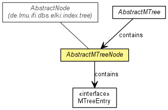

de.lmu.ifi.dbs.elki.index.tree.metrical.mtreevariants
Class AbstractMTreeNode<O,D extends Distance<D>,N extends AbstractMTreeNode<O,D,N,E>,E extends MTreeEntry<D>>
java.lang.Object
 de.lmu.ifi.dbs.elki.persistent.AbstractPage
de.lmu.ifi.dbs.elki.index.tree.AbstractNode<E>
de.lmu.ifi.dbs.elki.index.tree.metrical.mtreevariants.AbstractMTreeNode<O,D,N,E>
de.lmu.ifi.dbs.elki.persistent.AbstractPage
de.lmu.ifi.dbs.elki.index.tree.AbstractNode<E>
de.lmu.ifi.dbs.elki.index.tree.metrical.mtreevariants.AbstractMTreeNode<O,D,N,E>
- Type Parameters:
O - the type of DatabaseObject to be stored in the M-TreeD - the type of Distance used in the M-TreeN - the type of AbstractMTreeNode used in the M-TreeE - the type of MetricalEntry used in the M-Tree
- All Implemented Interfaces:
- Node<E>, Page, Externalizable, Serializable
- Direct Known Subclasses:
- MkAppTreeNode, MkCoPTreeNode, MkMaxTreeNode, MkTabTreeNode, MTreeNode
public abstract class AbstractMTreeNode<O,D extends Distance<D>,N extends AbstractMTreeNode<O,D,N,E>,E extends MTreeEntry<D>>
- extends AbstractNode<E>

Abstract super class for nodes in M-Tree variants.
- See Also:
- Serialized Form
|
Constructor Summary |
AbstractMTreeNode()
Empty constructor for Externalizable interface. |
AbstractMTreeNode(int capacity,
boolean isLeaf,
Class<? super E> eclass)
Creates a new MTreeNode with the specified parameters. |
|
Method Summary |
void |
adjustEntry(E entry,
DBID routingObjectID,
D parentDistance,
AbstractMTree<O,D,N,E> mTree)
Adjusts the parameters of the entry representing this node (e.g. after
insertion of new objects). |
D |
coveringRadius(DBID routingObjectID,
AbstractMTree<O,D,N,E> mTree)
Determines and returns the covering radius of this node. |
void |
integrityCheck(AbstractMTree<O,D,N,E> mTree,
E entry)
Tests this node (for debugging purposes). |
protected void |
integrityCheckParameters(E parentEntry,
N parent,
int index,
AbstractMTree<O,D,N,E> mTree)
Tests, if the parameters of the entry representing this node, are correctly
set. |
| Methods inherited from class de.lmu.ifi.dbs.elki.index.tree.AbstractNode |
addDirectoryEntry, addLeafEntry, children, deleteAllEntries, deleteEntry, equals, getCapacity, getEntries, getEntry, getNumEntries, isLeaf, readExternal, splitTo, splitTo, toString, writeExternal |
AbstractMTreeNode
public AbstractMTreeNode()
- Empty constructor for Externalizable interface.
AbstractMTreeNode
public AbstractMTreeNode(int capacity,
boolean isLeaf,
Class<? super E> eclass)
- Creates a new MTreeNode with the specified parameters.
- Parameters:
capacity - the capacity (maximum number of entries plus 1 for
overflow) of this nodeisLeaf - indicates whether this node is a leaf nodeeclass - Entry class, to initialize array storage
adjustEntry
public void adjustEntry(E entry,
DBID routingObjectID,
D parentDistance,
AbstractMTree<O,D,N,E> mTree)
- Adjusts the parameters of the entry representing this node (e.g. after
insertion of new objects). Subclasses may need to overwrite this method.
- Parameters:
entry - the entry representing this noderoutingObjectID - the id of the (new) routing object of this nodeparentDistance - the distance from the routing object of this node to
the routing object of the parent nodemTree - the M-Tree object holding this node
coveringRadius
public D coveringRadius(DBID routingObjectID,
AbstractMTree<O,D,N,E> mTree)
- Determines and returns the covering radius of this node.
- Parameters:
routingObjectID - the object id of the routing object of this nodemTree - the M-Tree
- Returns:
- the covering radius of this node
integrityCheck
public final void integrityCheck(AbstractMTree<O,D,N,E> mTree,
E entry)
- Tests this node (for debugging purposes).
- Parameters:
mTree - the M-Tree holding this nodeentry - the entry representing this node
integrityCheckParameters
protected void integrityCheckParameters(E parentEntry,
N parent,
int index,
AbstractMTree<O,D,N,E> mTree)
- Tests, if the parameters of the entry representing this node, are correctly
set. Subclasses may need to overwrite this method.
- Parameters:
parentEntry - the entry representing the parentparent - the parent holding the entry representing this nodeindex - the index of the entry in the parents child arrymTree - the M-Tree holding this node